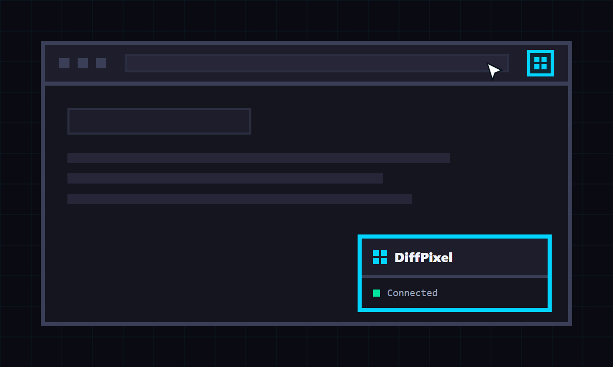
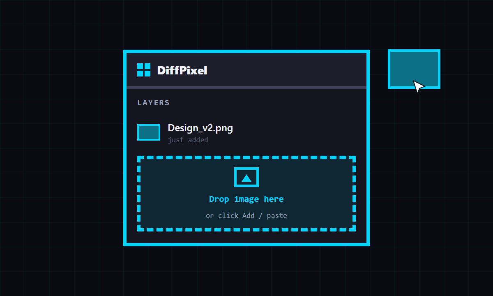
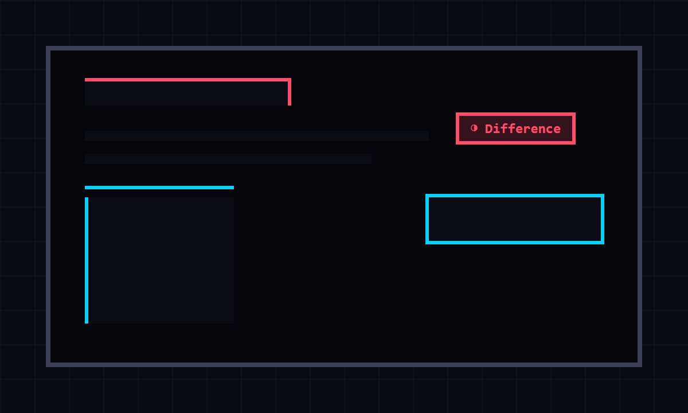

User manual
User Manual
From the first reference image to the final pixel check, this is the complete DiffPixel workflow.
Open the panel
- Open the web page you want to inspect.
- Click the DiffPixel extension icon in Chrome.
- The floating panel appears inside the page.
- Click the icon again to hide or show DiffPixel for that site.
Chrome internal pages and other restricted browser pages cannot run extensions.

Add your reference
- Click Add to choose one or more image files.
- Drag and drop images directly onto the panel.
- Copy an image and paste it on the page, or click Paste.
Layer list
Reorder, lock, hide, rename, select, or remove each layer. Use Clear all to remove every layer saved for the current site.

Align every pixel
- Name: rename the selected layer.
- Blend: choose Normal, Invert, Difference, Multiply, Screen, Overlay, Hard Light, or Exclusion. Use Apply to all to update every layer.
- Opacity: adjust transparency with the slider or percentage input.
- X / Y: move the selected layer by exact pixels.
- Scale: use the controls, presets, or input field.
- Reset / Center / Fit W: restore, center, or fit the selected layer.

Measure the rhythm
Turn on Grid to check spacing and alignment. Set the pixel size before enabling it, then compare the live page against the intended layout system.
Use the sun or moon button to switch between light and dark panel themes. The language menu offers Auto, English, and Japanese.
Keyboard shortcuts
| Action | Shortcut |
|---|---|
| Move selected layer by 1px | Arrow |
| Move selected layer by 10px | Shift + Arrow |
| Switch selected layer | Alt + Shift + J / K |
| Change blend mode | Alt + B, then ; / - |
| Adjust opacity | Alt + A, then ; / - |
| Toggle grid | Alt + G |
| Toggle layer visibility | Alt + H |
| Toggle layer lock | Alt + L |
| Scale to 0.50x / 2.00x | Alt + , / Alt + . |
| Adjust scale by 0.1 | Alt + ; / Alt + - |
| Reset / Center / Fit width | Alt + 0 / C / W |
Return to your setup
DiffPixel saves layer settings, panel settings, and site-level visibility locally on your device. When enabled, the panel returns after reloads and on other pages from the same host.
For local file:// pages, enable Allow access to file URLs on the extension details page in Chrome.